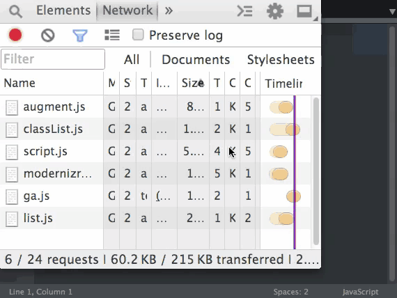
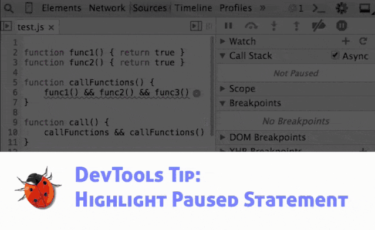
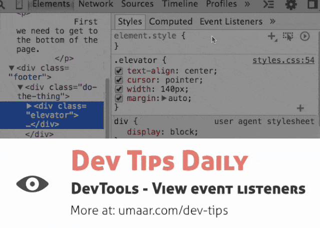
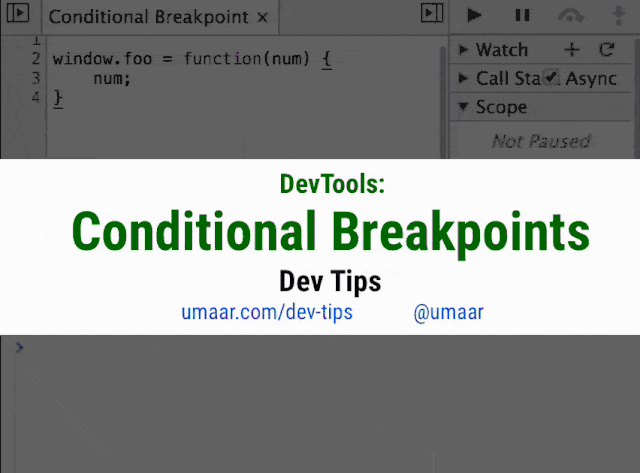
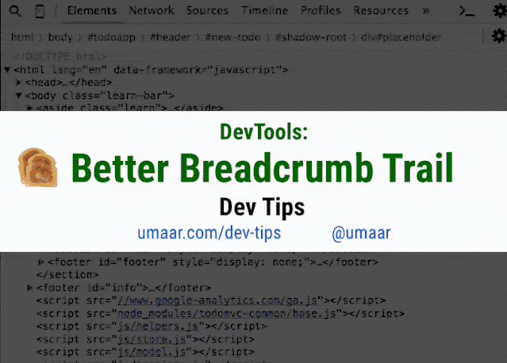
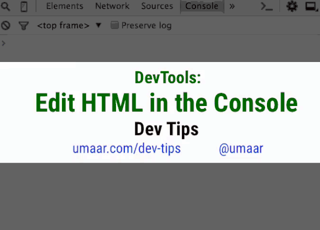

<!DOCTYPE html>


<html lang="zh-CN">


<head>
  <meta charset="utf-8" />
   
  <meta name="keywords" content="翟天野 天野 翟天野博客 tianye zhaitianye" />
   
  <meta name="description" content="The seeker of the world" />
  
  <meta name="viewport" content="width=device-width, initial-scale=1, maximum-scale=1" />
  <title>
    chrome开发者工具各种骚技巧 |  Tianye Blog
  </title>
  <meta name="generator" content="hexo-theme-ayer">
  
  <link rel="shortcut icon" href="/favicon.ico" />
  
  
<link rel="stylesheet" href="/dist/main.css">

  
<link rel="stylesheet" href="/comm/remixicon.min.css">

  
<link rel="stylesheet" href="/css/custom.css">

  
  
<script src="/comm/pace.min.js"></script>

  
  

  

</head>

</html>

<body>
  <div id="app">
    
      
      <canvas width="1777" height="841"
        style="position: fixed; left: 0px; top: 0px; z-index: 99999; pointer-events: none;"></canvas>
      
    <main class="content on">
      <section class="outer">
  <article
  id="post-chrome开发者工具各种骚技巧"
  class="article article-type-post"
  itemscope
  itemprop="blogPost"
  data-scroll-reveal
>
  <div class="article-inner">
    
    <header class="article-header">
       
<h1 class="article-title sea-center" style="border-left:0" itemprop="name">
  chrome开发者工具各种骚技巧
</h1>
 

    </header>
     
    <div class="article-meta">
      <a href="/2019/09/chrome%E5%BC%80%E5%8F%91%E8%80%85%E5%B7%A5%E5%85%B7%E5%90%84%E7%A7%8D%E9%AA%9A%E6%8A%80%E5%B7%A7/" class="article-date">
  <time datetime="2019-09-13T08:16:14.000Z" itemprop="datePublished">2019-09-13</time>
</a> 
  <div class="article-category">
    <a class="article-category-link" href="/categories/HTML/">HTML</a>
  </div>
  
<div class="word_count">
    <span class="post-time">
        <span class="post-meta-item-icon">
            <i class="ri-quill-pen-line"></i>
            <span class="post-meta-item-text"> 字数统计:</span>
            <span class="post-count">323</span>
        </span>
    </span>

    <span class="post-time">
        &nbsp; | &nbsp;
        <span class="post-meta-item-icon">
            <i class="ri-book-open-line"></i>
            <span class="post-meta-item-text"> 阅读时长≈</span>
            <span class="post-count">1 分钟</span>
        </span>
    </span>
</div>
 
    </div>
      
    <div class="tocbot"></div>


  
    <div class="article-entry" itemprop="articleBody">
       
  <p>对于每个前端从业者来说，除了F5键之外，用的最多的另外一个键就是F12了。最近大神（@小鱼二）推荐我一个网站，才知道chrome还有各种骚姿势。这个网站是：<strong>umaar.com/dev-tips/，</strong>本文分享一些实用且聪明的调试技巧。</p>
<h3 id="1-曾经，在线调伪类样式困扰过你？"><a href="#1-曾经，在线调伪类样式困扰过你？" class="headerlink" title="1.曾经，在线调伪类样式困扰过你？"></a>1.曾经，在线调伪类样式困扰过你？</h3><h3 id="2-源代码快速定位到某一行！ctrl-p"><a href="#2-源代码快速定位到某一行！ctrl-p" class="headerlink" title="2.源代码快速定位到某一行！ctrl + p"></a>2.源代码快速定位到某一行！ctrl + p</h3><p></p>
<h3 id="3-联调接口失败时，后台老哥总管你要response？"><a href="#3-联调接口失败时，后台老哥总管你要response？" class="headerlink" title="3.联调接口失败时，后台老哥总管你要response？"></a>3.联调接口失败时，后台老哥总管你要response？</h3><p></p>
<h3 id="4-你还一层层展开dom？Alt-Click"><a href="#4-你还一层层展开dom？Alt-Click" class="headerlink" title="4.你还一层层展开dom？Alt + Click"></a>4.你还一层层展开dom？Alt + Click</h3><p></p>
<h3 id="5-是不是报错了，你才去打断点？"><a href="#5-是不是报错了，你才去打断点？" class="headerlink" title="5.是不是报错了，你才去打断点？"></a>5.是不是报错了，你才去打断点？</h3><p></p>
<h3 id="6-你是不是经常想不起来，在哪绑定事件的？"><a href="#6-你是不是经常想不起来，在哪绑定事件的？" class="headerlink" title="6.你是不是经常想不起来，在哪绑定事件的？"></a>6.你是不是经常想不起来，在哪绑定事件的？</h3><p></p>
<h3 id="7-你是不是打断点时还要去改代码？"><a href="#7-你是不是打断点时还要去改代码？" class="headerlink" title="7.你是不是打断点时还要去改代码？"></a>7.你是不是打断点时还要去改代码？</h3><p></p>
<h3 id="8-看dom层级的最直观的方式？"><a href="#8-看dom层级的最直观的方式？" class="headerlink" title="8.看dom层级的最直观的方式？"></a>8.看dom层级的最直观的方式？</h3><p></p>
<h3 id="9-查一些特定的请求，过滤器用过吗？"><a href="#9-查一些特定的请求，过滤器用过吗？" class="headerlink" title="9.查一些特定的请求，过滤器用过吗？"></a>9.查一些特定的请求，过滤器用过吗？</h3><p></p>
<h3 id="10-在Elements面板调整dom结构很不方便？"><a href="#10-在Elements面板调整dom结构很不方便？" class="headerlink" title="10.在Elements面板调整dom结构很不方便？"></a>10.在Elements面板调整dom结构很不方便？</h3><p></p>
<h3 id="11-想知道，某图片加载的代码在哪？Initiator！！"><a href="#11-想知道，某图片加载的代码在哪？Initiator！！" class="headerlink" title="11.想知道，某图片加载的代码在哪？Initiator！！"></a>11.想知道，某图片加载的代码在哪？Initiator！！</h3><h3 id="12-不想加载某个文件了？"><a href="#12-不想加载某个文件了？" class="headerlink" title="12.不想加载某个文件了？"></a>12.不想加载某个文件了？</h3><h3 id="多的就不列举了，可以看看开头的网站。看了有几个功能我电脑（win10）是没有的，应该跟chrome版本有关。"><a href="#多的就不列举了，可以看看开头的网站。看了有几个功能我电脑（win10）是没有的，应该跟chrome版本有关。" class="headerlink" title="多的就不列举了，可以看看开头的网站。看了有几个功能我电脑（win10）是没有的，应该跟chrome版本有关。"></a>多的就不列举了，可以看看开头的网站。看了有几个功能我电脑（win10）是没有的，应该跟chrome版本有关。</h3><p>开发者工具的功能确实挺多，多得有时根本用不上，官网教程建议每个前端人员都看看：</p>
 
      <!-- reward -->
      
    </div>
    

    <!-- copyright -->
    
    <div class="declare">
      <ul class="post-copyright">
        <li>
          <i class="ri-copyright-line"></i>
          <strong>版权声明： </strong>
          本博客所有文章，未经许可，任何单位及个人不得做营利性使用！如有侵权请联系作者。
        </li>
      </ul>
    </div>
    
    <footer class="article-footer">
       
  <ul class="article-tag-list" itemprop="keywords"><li class="article-tag-list-item"><a class="article-tag-list-link" href="/tags/HTML/" rel="tag">HTML</a></li></ul>

    </footer>
  </div>

   
  <nav class="article-nav">
    
      <a href="/2019/09/React-Hooks%E8%AF%A5%E6%80%8E%E4%B9%88%E7%94%A8/" class="article-nav-link">
        <strong class="article-nav-caption">上一篇</strong>
        <div class="article-nav-title">
          
            React-Hooks该怎么用
          
        </div>
      </a>
    
    
      <a href="/2019/09/%E4%BB%8E%E8%BF%9925%E4%B8%AA%E6%96%B9%E9%9D%A2%E4%BC%98%E5%8C%96%E4%BD%A0%E7%9A%84%E5%89%8D%E7%AB%AF%E9%A1%B9%E7%9B%AE/" class="article-nav-link">
        <strong class="article-nav-caption">下一篇</strong>
        <div class="article-nav-title">从这25个方面优化你的前端项目</div>
      </a>
    
  </nav>

  
     
</article>

</section>
      <footer class="footer">
  <div class="outer">
    <ul>
      <li>
        Copyrights &copy;
        2015-2020
        <i class="ri-heart-fill heart_icon"></i> 翟天野
      </li>
    </ul>
    <ul>
      <li>
        
      </li>
    </ul>
    <ul>
      <li>
        
      </li>
    </ul>
    <ul>
      
    </ul>
    <ul>
      <li>
        <!-- cnzz统计 -->
        
      </li>
    </ul>
  </div>
</footer>
      <div class="float_btns">
        <div class="totop" id="totop">
  <i class="ri-arrow-up-line"></i>
</div>

<div class="todark" id="todark">
  <i class="ri-moon-line"></i>
</div>

      </div>
    </main>
    <aside class="sidebar on">
      <button class="navbar-toggle"></button>
<nav class="navbar">
  
  <div class="logo">
    <a href="/"></a>
  </div>
  
  <ul class="nav nav-main">
    
    <li class="nav-item">
      <a class="nav-item-link" href="/">主页</a>
    </li>
    
    <li class="nav-item">
      <a class="nav-item-link" href="/archives">归档</a>
    </li>
    
    <li class="nav-item">
      <a class="nav-item-link" href="/categories">分类</a>
    </li>
    
    <li class="nav-item">
      <a class="nav-item-link" href="/tags">标签</a>
    </li>
    
    <li class="nav-item">
      <a class="nav-item-link" href="/about">关于</a>
    </li>
    
  </ul>
</nav>
<nav class="navbar navbar-bottom">
  <ul class="nav">
    <li class="nav-item">
      
      
    </li>
  </ul>
</nav>
<div class="search-form-wrap">
  <div class="local-search local-search-plugin">
  <input type="search" id="local-search-input" class="local-search-input" placeholder="Search...">
  <div id="local-search-result" class="local-search-result"></div>
</div>
</div>
    </aside>
    <script>
      if (window.matchMedia("(max-width: 768px)").matches) {
        document.querySelector('.content').classList.remove('on');
        document.querySelector('.sidebar').classList.remove('on');
      }
    </script>
    <div id="mask"></div>

<!-- #reward -->
<div id="reward">
  <span class="close"><i class="ri-close-line"></i></span>
  <p class="reward-p"><i class="ri-cup-line"></i>请我喝杯咖啡吧~</p>
  <div class="reward-box">
    
    
  </div>
</div>
    
<script src="/js/jquery-2.0.3.min.js"></script>


<script src="/js/lazyload.min.js"></script>


<!-- Tocbot -->


<script src="/js/tocbot.min.js"></script>

<script>
  
  if(document.getElementsByClassName("tocbot").length !== 0){
    tocbot.init({
      tocSelector: '.tocbot',
      contentSelector: '.article-entry',
      headingSelector: 'h1, h2, h3, h4, h5, h6',
      hasInnerContainers: true,
      scrollSmooth: true,
      scrollContainer: 'main',
      positionFixedSelector: '.tocbot',
      positionFixedClass: 'is-position-fixed',
      fixedSidebarOffset: 'auto'
    });
  }
</script>

<script src="/comm/jquery.modal.min.js"></script>
<link rel="stylesheet" href="/comm/jquery.modal.min.css">
<script src="/comm/jquery.justifiedGallery.min.js"></script>

<script src="/dist/main.js"></script>

<!-- ImageViewer -->

<!-- Root element of PhotoSwipe. Must have class pswp. -->
<div class="pswp" tabindex="-1" role="dialog" aria-hidden="true">

    <!-- Background of PhotoSwipe. 
         It's a separate element as animating opacity is faster than rgba(). -->
    <div class="pswp__bg"></div>

    <!-- Slides wrapper with overflow:hidden. -->
    <div class="pswp__scroll-wrap">

        <!-- Container that holds slides. 
            PhotoSwipe keeps only 3 of them in the DOM to save memory.
            Don't modify these 3 pswp__item elements, data is added later on. -->
        <div class="pswp__container">
            <div class="pswp__item"></div>
            <div class="pswp__item"></div>
            <div class="pswp__item"></div>
        </div>

        <!-- Default (PhotoSwipeUI_Default) interface on top of sliding area. Can be changed. -->
        <div class="pswp__ui pswp__ui--hidden">

            <div class="pswp__top-bar">

                <!--  Controls are self-explanatory. Order can be changed. -->

                <div class="pswp__counter"></div>

                <button class="pswp__button pswp__button--close" title="Close (Esc)"></button>

                <button class="pswp__button pswp__button--share" style="display:none" title="Share"></button>

                <button class="pswp__button pswp__button--fs" title="Toggle fullscreen"></button>

                <button class="pswp__button pswp__button--zoom" title="Zoom in/out"></button>

                <!-- Preloader demo http://codepen.io/dimsemenov/pen/yyBWoR -->
                <!-- element will get class pswp__preloader--active when preloader is running -->
                <div class="pswp__preloader">
                    <div class="pswp__preloader__icn">
                        <div class="pswp__preloader__cut">
                            <div class="pswp__preloader__donut"></div>
                        </div>
                    </div>
                </div>
            </div>

            <div class="pswp__share-modal pswp__share-modal--hidden pswp__single-tap">
                <div class="pswp__share-tooltip"></div>
            </div>

            <button class="pswp__button pswp__button--arrow--left" title="Previous (arrow left)">
            </button>

            <button class="pswp__button pswp__button--arrow--right" title="Next (arrow right)">
            </button>

            <div class="pswp__caption">
                <div class="pswp__caption__center"></div>
            </div>

        </div>

    </div>

</div>

<link rel="stylesheet" href="/comm/photoswipe_dist/photoswipe.css">
<link rel="stylesheet" href="/comm/photoswipe_dist/default-skin/default-skin.css">
<script src="/comm/photoswipe_dist/photoswipe.min.js"></script>
<script src="/comm/photoswipe_dist/photoswipe-ui-default.min.js"></script>

<script>
    function viewer_init() {
        let pswpElement = document.querySelectorAll('.pswp')[0];
        let $imgArr = document.querySelectorAll(('.article-entry img:not(.reward-img)'))

        $imgArr.forEach(($em, i) => {
            $em.onclick = () => {
                // slider展开状态
                // todo: 这样不好，后面改成状态
                if (document.querySelector('.left-col.show')) return
                let items = []
                $imgArr.forEach(($em2, i2) => {
                    let img = $em2.getAttribute('data-idx', i2)
                    let src = $em2.getAttribute('data-target') || $em2.getAttribute('src')
                    let title = $em2.getAttribute('alt')
                    // 获得原图尺寸
                    const image = new Image()
                    image.src = src
                    items.push({
                        src: src,
                        w: image.width || $em2.width,
                        h: image.height || $em2.height,
                        title: title
                    })
                })
                var gallery = new PhotoSwipe(pswpElement, PhotoSwipeUI_Default, items, {
                    index: parseInt(i)
                });
                gallery.init()
            }
        })
    }
    viewer_init()
</script>

<!-- MathJax -->

<!-- Katex -->

<!-- busuanzi  -->

<!-- ClickLove -->

<!-- ClickBoom1 -->

<!-- ClickBoom2 -->


<script src="/js/clickBoom2.js"></script>


<!-- CodeCopy -->


<link rel="stylesheet" href="/css/clipboard.css">

<script src="/comm/clipboard.min.js"></script>
<script>
  function wait(callback, seconds) {
    var timelag = null;
    timelag = window.setTimeout(callback, seconds);
  }
  !function (e, t, a) {
    var initCopyCode = function(){
      var copyHtml = '';
      copyHtml += '<button class="btn-copy" data-clipboard-snippet="">';
      copyHtml += '<i class="ri-file-copy-2-line"></i><span>COPY</span>';
      copyHtml += '</button>';
      $(".highlight .code pre").before(copyHtml);
      $(".article pre code").before(copyHtml);
      var clipboard = new ClipboardJS('.btn-copy', {
        target: function(trigger) {
          return trigger.nextElementSibling;
        }
      });
      clipboard.on('success', function(e) {
        let $btn = $(e.trigger);
        $btn.addClass('copied');
        let $icon = $($btn.find('i'));
        $icon.removeClass('ri-file-copy-2-line');
        $icon.addClass('ri-checkbox-circle-line');
        let $span = $($btn.find('span'));
        $span[0].innerText = 'COPIED';
        
        wait(function () { // 等待两秒钟后恢复
          $icon.removeClass('ri-checkbox-circle-line');
          $icon.addClass('ri-file-copy-2-line');
          $span[0].innerText = 'COPY';
        }, 2000);
      });
      clipboard.on('error', function(e) {
        e.clearSelection();
        let $btn = $(e.trigger);
        $btn.addClass('copy-failed');
        let $icon = $($btn.find('i'));
        $icon.removeClass('ri-file-copy-2-line');
        $icon.addClass('ri-time-line');
        let $span = $($btn.find('span'));
        $span[0].innerText = 'COPY FAILED';
        
        wait(function () { // 等待两秒钟后恢复
          $icon.removeClass('ri-time-line');
          $icon.addClass('ri-file-copy-2-line');
          $span[0].innerText = 'COPY';
        }, 2000);
      });
    }
    initCopyCode();
  }(window, document);
</script>


<!-- CanvasBackground -->


    
  </div>
</body>

</html>